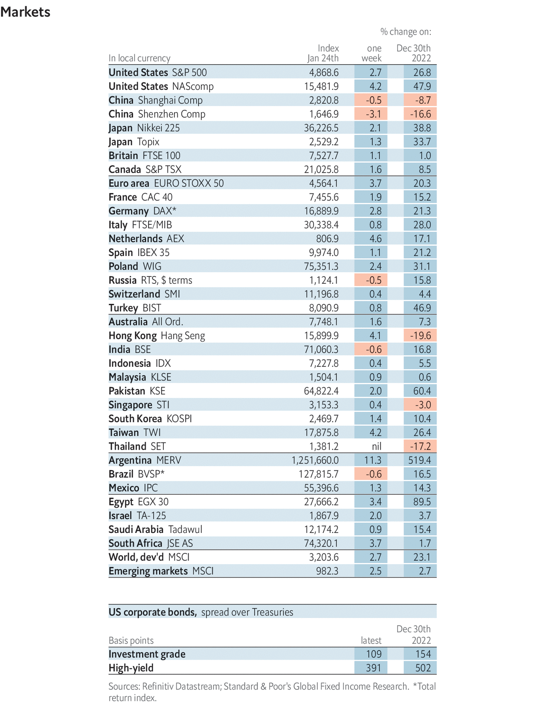
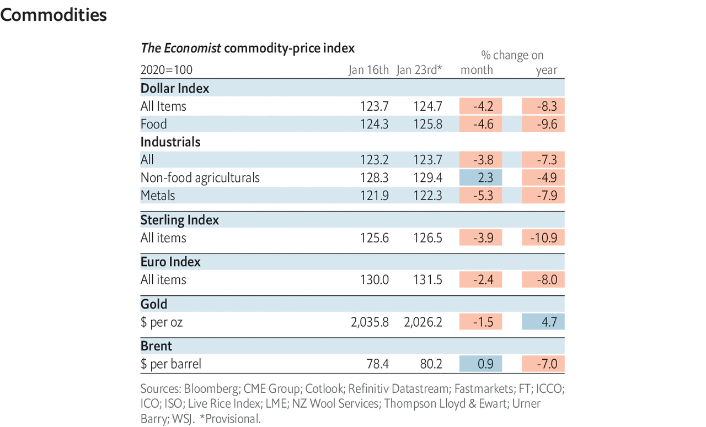

Economic and financial indicators
| Indicators
Economic data, commodities and markets
image: The Economist
image: The Economist

image: The Economist

image: The Economist
The Economist
 commodity-price index was rebased in January 2024. Our new weights can be found
here
.